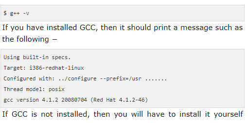

ENVIRONMENT SETUP In C++ Programming
Local Environment Setup
If you are still willing to set up your environment for C++, you need to have the following two softwares on your computer.
Text Editor
This will be used to type your program. Examples of few editors include Windows Notepad, OS Edit command, Brief, Epsilon, EMACS, and vim or vi.Name and version of text editor can vary on different operating systems. For example, Notepad will be used on Windows and vim or vi can be used on windows as well as Linux, or UNIX.
The files you create with your editor are called source files and for C++ they typically are named with the extension .cpp, .cp, or .c.
A text editor should be in place to start your C++ programming.
C++ Compiler
This is an actual C++ compiler, which will be used to compile your source code into final executable program.Most C++ compilers don't care what extension you give to your source code, but if you don't specify otherwise, many will use .cpp by default.
Most frequently used and free available compiler is GNU C/C++ compiler, otherwise you can have compilers either from HP or Solaris if you have the respective Operating Systems.
Installing GNU C/C++ Compiler,UNIX/Linux Installation
If you are using Linux or UNIX then check whether GCC is installed on your system by entering the following command from the command line . 
Mac OS X Installation
If you use Mac OS X, the easiest way to obtain GCC is to download the Xcode development environment from Apple's website.
Windows Installation
To install GCC at Windows you need to install MinGW. To install MinGW, go to the MinGW homepage, www.mingw.org, and follow the link to the MinGW download page. Download the latest version of the MinGW installation program which should be named MinGW-
While installing MinGW, at a minimum, you must install gcc-core, gcc-g++, binutils, and the MinGW runtime, but you may wish to install more.
Add the bin subdirectory of your MinGW installation to your PATH environment variable so that you can specify these tools on the command line by their simple names.
When the installation is complete, you will be able to run gcc, g++, ar, ranlib, dlltool, and several other GNU tools from the Windows command line.